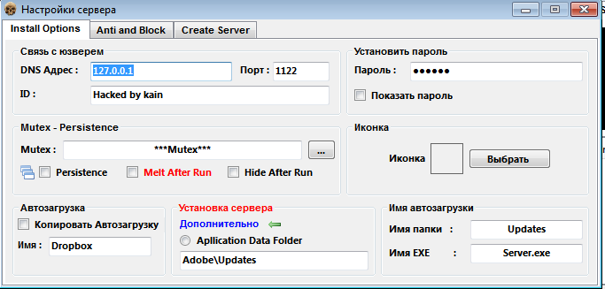
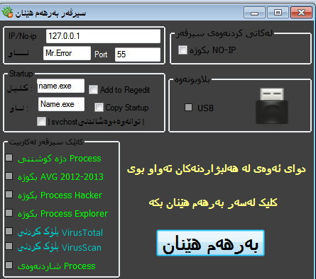

Technical Review of "ABC Overlay" Based RAT Variants
Published on July 24, 2025
The purpose of this article is to explain, within a technical framework, the GUI structure and overlay addressing technique commonly used in some RAT (Remote Access Trojan) creation software that caught my attention during my personal research.
Introduction
Some RAT creation tools are configured using similar techniques, almost as exact copies of each other. The common point that stands out in these types of RATs is that the configuration data is located in the overlay section of the PE file unencrypted or only hidden using a very simple method.
I have named the RATs falling into this category as "ABC RATs" due to their similar data formats and structures.
Technical Features
The overlay section in these RATs typically contains the following data:
- IP address (command and control server)
- Port number
- Username
- RAT name
- Antivirus disable (AV kill)
- Process termination (process kill)
- Configurations such as spreading via USB (USB spread), etc.
Technical Observation: All analyzed builders write data to the overlay area of the PE file in a plaintext and fixed pattern. This structure can be easily seen directly with tools like hexdump.
Common fixed pattern:
61 62 63 63 62 61 32 31 65 64 73 61 64 78 64 61 62 63 63 62 61 33 31 32 34 61 62 63 63 62 61 63
This data is typically structured as abccba<data>abccba and is embedded at the end of the file (overlay). This segment does not have a defined offset in the PE header, meaning the end of the file is determined directly through analysis.
Import Feature: In all listed RAT samples, only mscoree.dll is imported, and specifically the _CorExeMain function is called. This indicates that a .NET-based payload is embedded.
Overlay Hex Format:
abccba127.0.0.1abccba55abccbaMr.Errorabccba0abccbaName.exeabccba0abccbaname.exe...
YARA Rule
The following YARA rule is specifically prepared to detect ABC RAT variants:
rule ABC_RATs
{
meta:
description = "ABC RAT's Detector Rule "
author = "GokbakarE"
date = "24-07-2025"
license = "MIT License"
strings:
$Overlay = { 61 62 63 63 62 61 }
condition:
pe.is_pe and
pe.imports("mscoree.dll") and
pe.imports("mscoree.dll", "_CorExeMain") and
$Overlay in (pe.overlay.offset .. pe.overlay.offset + pe.overlay.size)
}
Explanation: The rule focuses on both the mscoree.dll import and the fixed signature in the overlay region. It provides a high hit rate. It can be easily integrated into a signature-based scanning system relying on overlay analysis.
These configurations are placed at the end of the file (overlay area) with a specific pattern. The most commonly used pattern is as follows:
abccba<data>abccba
An example of this structure is given below:
Binary:
61 62 63 63 62 61 31 32 37 2E 30 2E 30 2E 31 61 62 63 63 62 61 35 35 ...
String equivalent:
abccba127.0.0.1abccba55abccbaMr.Errorabccba0abccbaName.exeabccba0abccbaname.exe...
In this example:
127.0.0.1— C2 IP address55— Port numberMr.Error— Username or aliasName.exe,name.exe— Filename/clone name0,1— Boolean configurations (e.g., USB spread on/off)
Common Graphical User Interface (GUI) Features
The interfaces of the builder software that create these RATs are also quite similar to each other:
Typical GUI structure of ABC RAT Builders (Example 1)
Typical GUI structure of ABC RAT Builders (Example 2)
These builders generally include:
- A simple C2 configuration field
- Options like USB spread, antivirus disable activated with 0/1
- Creating the EXE file with a "Build" button
Detected "ABC RAT" Based Builders
Analysis has determined that the following builder software use the same overlay format and structure:
- Snake_Worm_v0_1
- Dark_Virus_RAT_v0_2_0_Beta
- BHF_Rat_v0_2_Beta
- Kurd_Rat_v1_0_Beta_Online
- Eagle_RAT_1_2
- Epsilon_RAT_v1_1
- Viral_Rat
- VanToM_W0rm_1_2
- FD_Rat
- Almjhool_1_1
- TiG3R_RAT_v1_0
- SpyGate_RAT_v_0_2_6
- VanToM_RAT_1_3
- VanToM_RAT_1_0
- Wormins_RAT_0_8
- Virus_Rat_v7_0
- Virus_Rat_v6_0
- Virus_Rat_v4_0
The builder software listed above, although bearing formally different names, largely use the same infrastructure and produce similar overlay formats. This situation suggests that these tools are either produced by the same developer or that the same source code is repackaged by different individuals.
Example: VanToM RAT Overlay Analysis
Below is the structure detected in the overlay section of a RAT file created with the VanToM_RAT_1_0 software, given directly:
abccba127.0.0.1abccba55abccbaMr.Errorabccba0abccbaName.exeabccba0abccbaname.exeabccba0abccba0abccba0abccba0abccba0abccba0abccba0abccba0abccba0abccba0
This structure contains the following:
- 127.0.0.1 → Command and control (C2) server
- 55 → Port used
- Mr.Error → Username or system identifier
- Name.exe, name.exe → Filenames to be created or cloned on the system
- Subsequent 0/1 values → Boolean-based configurations (e.g., auto-start, AV bypass, etc.)
Importance for Security and Detection
These types of RAT configurations prefer to place data in the overlay section of the PE file rather than standard sections, especially to evade antivirus detection. However, this method:
- Can be easily detected as it does not include any encryption or data integrity check.
- The schematic structure of the overlay area (e.g.,
abccba<data>abccba) can be quickly captured by signature-based analysis. - Configurations can be read directly with simple string analysis.
Conclusion
This malware family, defined as "ABC RATs", creates a wide variation using the same structure, format, and builder logic, albeit with low-level obfuscation techniques. This situation provides an advantage for security researchers to detect similar RATs and automate analysis processes.
Recommendations:
- Develop YARA rules based on overlay analysis
- Use static analysis tools that detect fixed markers like
abccba - Parse overlay data to classify configurations
- Perform hash and visual similarity comparisons based on the GUI structures and icons of builder software
Author:
GokbakarE
Date: July 24, 2025